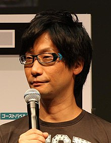

Hideo Kojima (小島秀夫, Kojima Hideo, 24 de agosto de 1963) es un diseñador y director de videojuegos japonés. Fue el vicepresidente de Konami Computer Entertainment Japan y actualmente se encuentra a cargo del equipo desarrollador de videojuegos Kojima Productions, un nuevo equipo dedicado a la creación de videojuegos creativos dejando de lado las decisiones económicas y administrativas. Hideo Kojima es el creador y director de varios videojuegos exitosos, incluyendo franquicias como
Metal Gear, Snatcher y Policenauts. También ha producido juegos como
Death Stranding y Boktai.
Considerado como un autor de videojuegos, desarrolló una fuerte pasión por el cine de acción-aventura y la literatura durante su infancia y adolescencia. En 1986,
Konami lo contrató, para lo cual diseñó y escribió Metal Gear (1987) para el MSX2, un juego que sentó las bases de los juegos de sigilo y la serie Metal Gear, sus obras más conocidas y apreciadas. El título que lo consagró como uno de los diseñadores de videojuegos más aclamados fue Metal Gear Solid (1998) para PlayStation. También es conocido por producir la serie Zone of the Enders, así como por escribir y diseñar Snatcher (1988) y Policenauts (1994), juegos de aventura gráfica considerados por su presentación cinematográfica.
En 2005, Kojima fundó
Kojima Productions, una casa de software controlada por Konami, y en 2011, fue nombrado vicepresidente de Konami Digital Entertainment.
En 2015, Kojima Productions se separó de Konami, convirtiéndose en un estudio independiente. Su primer juego fue Death Stranding, que se lanzó en 2019. Kojima también ha contribuido a Rolling Stone, escribiendo columnas sobre las similitudes y diferencias entre películas y videojuegos.